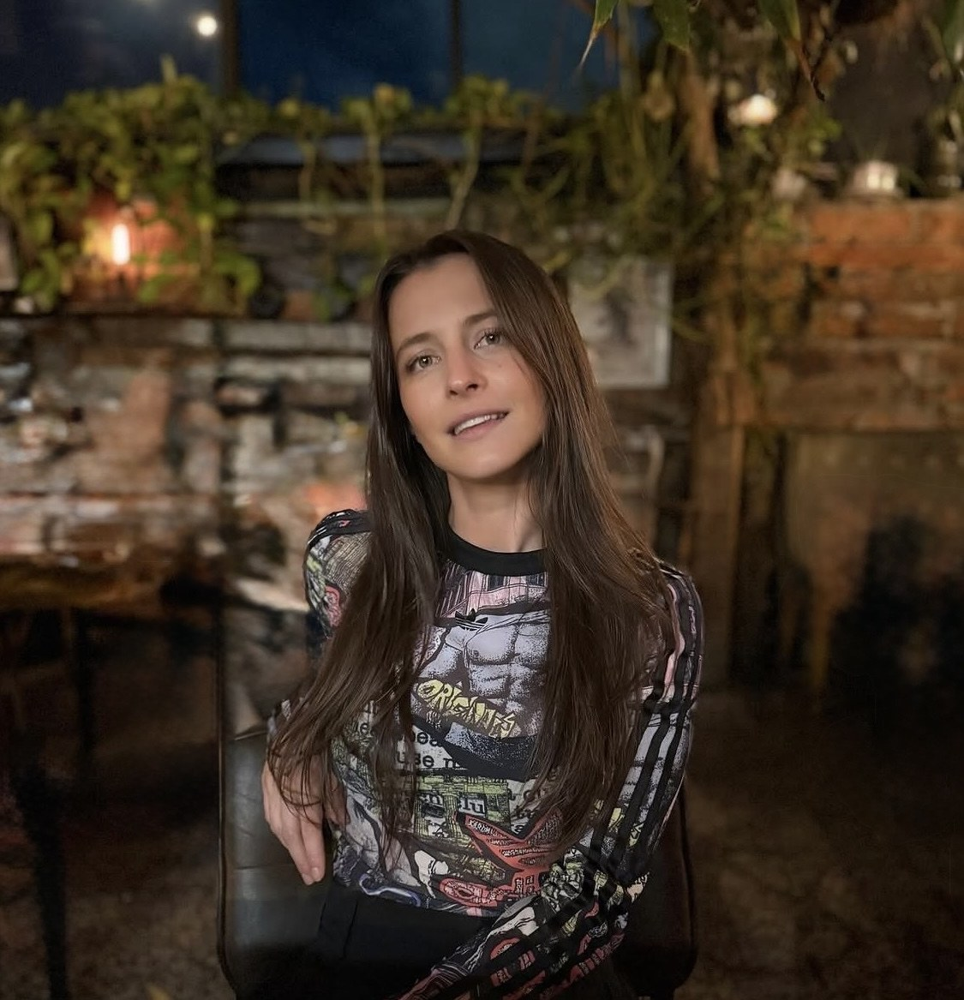

About Natalia Sharova
Natalia Sharova is an abstract painter based in Brooklyn, New York. For more than a decade, she has used lyrical abstraction to give physical form to intangible thoughts.
Working with palette knives, dry brushes, and acrylics of varying weight, she builds layers from thin washes to thick, scraped paint. Knife marks, dry-brush texture, and fine lines cut through soft fields of color, giving her paintings movement and a restless energy.
Growing up in Moscow, Natalia watched her mother paint moody landscapes and still lifes in oil on canvases she stretched herself. Her mother taught her how to draw, how to build a composition, and how to break complex real-life objects down into a palette of color.
Natalia has lived across the United States, including Wyoming, Washington DC, and now Brooklyn, the place she calls home and where she maintains her studio residency.
View selected works“Placeholder artist statement: a short paragraph in Natalia’s own voice about what she’s trying to capture in her work and why.”